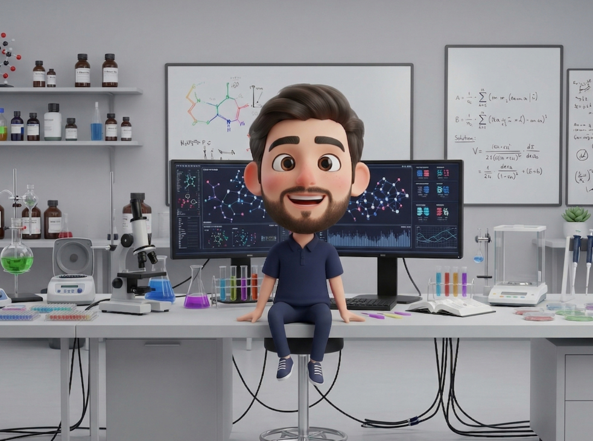
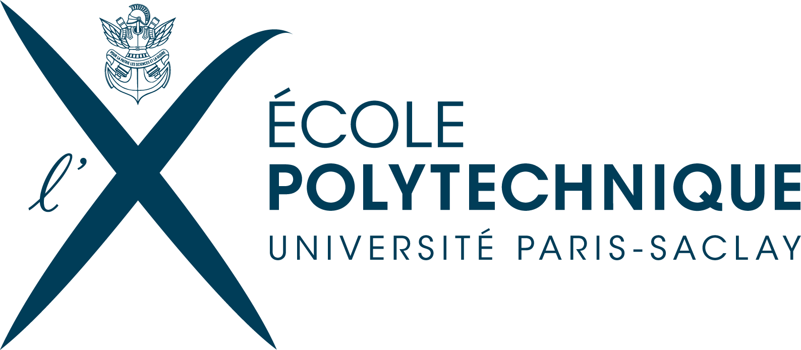
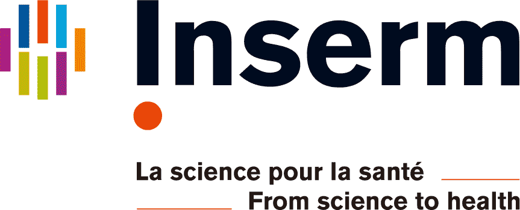

Bioinformatics · Predictive Toxicology
Rayane Achebouche
PhD in Bioinformatics — AI linking molecular structure to biological effect
I build models that connect the structure of a small molecule to the effect it has on a cell — toxicity, receptor binding, morphological phenotype — across transcriptomics, high-content imaging and molecular graphs. My doctoral work applies this to identifying chemicals that raise breast cancer risk, without animal testing.
About
I am a PhD student in Bioinformatics at Université Paris Cité (INSERM U1133, supervised by Pr. Olivier Taboureau). My thesis asks which environmental chemicals raise breast cancer risk, and answers it by integrating two kinds of data that are rarely analysed together: transcriptomic responses to chemical exposure and high-content cell imaging. The approach is comparative — confronting the signature a compound leaves in a cell line with the deregulation measured in tumours, then ranking suspected carcinogens by how closely they resemble those already established, so that a chemical can be flagged without an animal test.
Prior to my PhD, I worked as a Research Engineer at École Polytechnique (Laboratoire d’Optique et Biosciences, 2021–2023), where I developed custom Graph Neural Networks to predict protein-ligand binding affinity and conducted structure-based virtual screening campaigns targeting ThyX inhibitors. I was also awarded the X-Grant prize through the X-Novation entrepreneurial program.
My earlier research at INSERM covered systems biology, network toxicology, olfactory receptor–molecule relationships, and the application of deep learning to multi-target pharmacology.
Publications
Code & Data
Every published analysis is released as a reproducible repository: versioned download scripts, frozen environments, and a stated list of what the work does not show.
Experience
Research Engineer

Ecole Polytechnique — Laboratoire d’Optique et Biosciences (L.O.B)- Design and training of custom Graph Neural Networks for protein-ligand binding affinity prediction
- Structure-based virtual screening using Smina for the identification of novel ThyX inhibitors
- Laureate of the X-Grant prize — X-Novation entrepreneurship program
Research Engineer

INSERM UMR S1124- Collection and processing of data from literature, databases, and experimental studies
- Development of integrative models based on biological networks for prediction purposes
- Collaborative scientific writing
Research Scientist Intern
- Database construction via web-scraping
- Generation and analysis of ML/DL multi-label classification models: RF, MLP, CNN, GCN
- Molecular representations: fingerprints, molecular descriptors, molecular graphs
- Dimensionality reduction and clustering of large compound sets (UMAP)
Research Scientist Intern
- Systems biology study contributing to a peer-reviewed publication
Skills
Predictive Toxicology & NAMs
Transcriptomics & Omics Integration
High-Content Imaging
Cheminformatics
Structural Modelling
Machine Learning & Deep Learning
Networks & Systems Biology
Engineering & Reproducibility
Education
Contact
Feel free to reach out for research collaborations, questions, or discussions around AI and drug discovery.